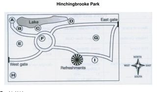
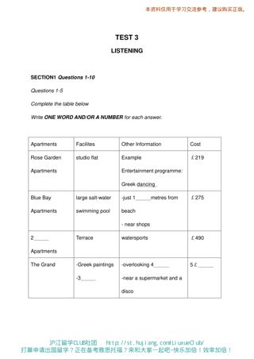
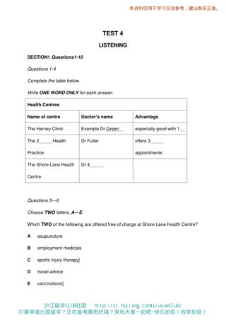
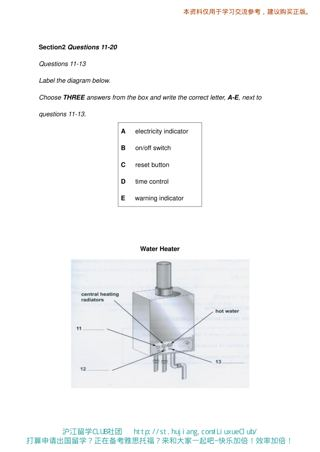
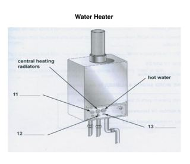
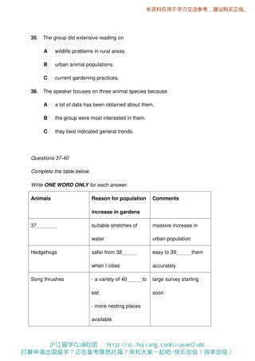

Listening visuals Cambridge 9Reviewed results: 122 confirmed issue records (86 duplicate pairs, 9 sequence inversions, 1 wrong-Part image, 26 clipped images); 23 suspected records. Counts overlap Parts/assets. Full reviewed CSV. Raw audit.json/findings.csv are detector output, not the final defect list. Fallback scope alone is not a defect. OCR ranges are incomplete hints.
All books · Cambridge 9: 16 Parts · exact current resolver outputCambridge 09 / Test 1 / Part 1
No confirmed/candidate defect detected; not a visual PASS
Q[1, 10]: 1 [Part fallback]
 #1 OCR Q[[1, 10]] · 1013×1432
#1 OCR Q[[1, 10]] · 1013×1432
Test_1_Section_1_PDF_Page_001.jpg
assets/public/718c37f41c6344e5a7df8a73465ef48882a81bfa52641694f7022b18a145924f.jpg
asset-718c37f41c6344e5a7df8a73465ef48882a81bfa52641694f7022b18a145924fCambridge 09 / Test 1 / Part 2
No confirmed/candidate defect detected; not a visual PASS
Q[11, 16]: 1, 2 [Part fallback]
Q[17, 18]: 1, 2 [Part fallback]
Q[19, 20]: 1, 2 [Part fallback]
 #1 OCR Q[[11, 20], [11, 16]] · 1013×1432
#1 OCR Q[[11, 20], [11, 16]] · 1013×1432
Test_1_Section_2_PDF_Page_002.jpg
assets/public/254aa9c201309cc271774c1c0143410c82b0b950355d4a15f50b0c7a86fbf46c.jpg
asset-254aa9c201309cc271774c1c0143410c82b0b950355d4a15f50b0c7a86fbf46c #2 OCR Q[] · 1013×1432
#2 OCR Q[] · 1013×1432
Test_1_Section_2_PDF_Page_003.jpg
assets/public/d8b31ff576a109f9af1a01612c59820da253cce2d20f7e6cfb3bc74b31d83eda.jpg
asset-d8b31ff576a109f9af1a01612c59820da253cce2d20f7e6cfb3bc74b31d83edaCambridge 09 / Test 1 / Part 3
No confirmed/candidate defect detected; not a visual PASS
Q[21, 30]: 1, 2 [Part fallback]
 #1 OCR Q[[21, 30]] · 1013×1432
#1 OCR Q[[21, 30]] · 1013×1432
Test_1_Section_3_PDF_Page_004.jpg
assets/public/8521c5b13514b387ac8326b02a5d63f3a28f756296cee74131ae9a1d18238b41.jpg
asset-8521c5b13514b387ac8326b02a5d63f3a28f756296cee74131ae9a1d18238b41 #2 OCR Q[] · 1013×1432
#2 OCR Q[] · 1013×1432
Test_1_Section_3_PDF_Page_005.jpg
assets/public/09aee14aa4a8ef116ae246c390545035db476d46a3cb47c36e50eb6eb42f042c.jpg
asset-09aee14aa4a8ef116ae246c390545035db476d46a3cb47c36e50eb6eb42f042cCambridge 09 / Test 1 / Part 4
No confirmed/candidate defect detected; not a visual PASS
Q[31, 40]: 1 [Part fallback]
 #1 OCR Q[[31, 40]] · 1013×1432
#1 OCR Q[[31, 40]] · 1013×1432
Test_1_Section_4_PDF_Page_006.jpg
assets/public/c48f55ae443b1b92349a6106571965a5f13927008fc5785ae684b9c376584b6b.jpg
asset-c48f55ae443b1b92349a6106571965a5f13927008fc5785ae684b9c376584b6bCambridge 09 / Test 2 / Part 1
V0173:confirmed:duplicate_content
Q[1, 10]: 1, 2
#1 OCR Q[[1, 10]] · 1400×1979
Test_2_Section_1_Accommodation_Form.png
assets/public/1084d03758b60546a4f898d52761d3ea2212c88f14a56429d5fa3f14dd8fc59d.png
asset-1084d03758b60546a4f898d52761d3ea2212c88f14a56429d5fa3f14dd8fc59d #2 OCR Q[[1, 10]] · 1013×1432
#2 OCR Q[[1, 10]] · 1013×1432
Test_2_Section_1_PDF_Page_028.jpg
assets/public/a5608ab3bfd80bab1e8aeeb32b8bba4e4c04100ad847ef0ea0ee5a29736d0594.jpg
asset-a5608ab3bfd80bab1e8aeeb32b8bba4e4c04100ad847ef0ea0ee5a29736d0594 Cambridge 09 / Test 2 / Part 2
V0174:confirmed:duplicate_content; V0175:confirmed:duplicate_content; V0176:confirmed:duplicate_content; V0177:confirmed:order_inversion; C005:suspected:crop_edge_risk
Q[11, 13]: 1, 2, 3, 4
Q[14, 16]: 1, 2, 3, 4 [Part fallback]
Q[17, 20]: 1, 2, 3, 4
#1 OCR Q[[17, 20], [17, 20]] · 1400×1979
Test_2_Section_2_Hinchingbrooke_Park_Map.png
assets/public/047f2cc96a76335453eec14a818f6a40ee647fe84e4eeb02cf335ea82de5a372.png
asset-047f2cc96a76335453eec14a818f6a40ee647fe84e4eeb02cf335ea82de5a372
#2 OCR Q[] · 1326×774
Test_2_Section_2_Hinchingbrooke_Park_Map_CROP.png
assets/public/1e091ce4fe692035a8a5ba9e15a51d2223a33dfd0b4a7569fd6e429119a03c85.png
asset-1e091ce4fe692035a8a5ba9e15a51d2223a33dfd0b4a7569fd6e429119a03c85 #3 OCR Q[[11, 20], [11, 13], [14, 16]] · 1013×1432
#3 OCR Q[[11, 20], [11, 13], [14, 16]] · 1013×1432
Test_2_Section_2_PDF_Page_029.jpg
assets/public/dee84aae600590be7edc3b69e6d62c27799f31546f7f7e994a040febe65e8fec.jpg
asset-dee84aae600590be7edc3b69e6d62c27799f31546f7f7e994a040febe65e8fec #4 OCR Q[[17, 20], [17, 20]] · 1013×1432
#4 OCR Q[[17, 20], [17, 20]] · 1013×1432
Test_2_Section_2_PDF_Page_030.jpg
assets/public/c807b06d0f8e77a0799e466a8b72b9b624a990e702f61bd3868321fd5d7f2156.jpg
asset-c807b06d0f8e77a0799e466a8b72b9b624a990e702f61bd3868321fd5d7f2156 Cambridge 09 / Test 2 / Part 3
No confirmed/candidate defect detected; not a visual PASS
Q[21, 24]: 1, 2 [Part fallback]
Q[25, 30]: 1, 2 [Part fallback]
 #1 OCR Q[[21, 30], [21, 24]] · 1013×1432
#1 OCR Q[[21, 30], [21, 24]] · 1013×1432
Test_2_Section_3_PDF_Page_031.jpg
assets/public/96ebadd5eed2d2348bf4acbd3ba0ece93cbed49e56518a65ccb593aae8ac2804.jpg
asset-96ebadd5eed2d2348bf4acbd3ba0ece93cbed49e56518a65ccb593aae8ac2804 #2 OCR Q[[25, 30]] · 1013×1432
#2 OCR Q[[25, 30]] · 1013×1432
Test_2_Section_3_PDF_Page_032.jpg
assets/public/4f2f5d580856dc53579c221c4711a0a5dce98edf2b7129d40a6d877fbb9c70c0.jpg
asset-4f2f5d580856dc53579c221c4711a0a5dce98edf2b7129d40a6d877fbb9c70c0Cambridge 09 / Test 2 / Part 4
No confirmed/candidate defect detected; not a visual PASS
Q[31, 40]: 1, 2 [Part fallback]
 #1 OCR Q[[31, 40]] · 1013×1432
#1 OCR Q[[31, 40]] · 1013×1432
Test_2_Section_4_PDF_Page_033.jpg
assets/public/2461a0101267760cce9522562e91eb8277d68a2196ca011e27b1f1175454b971.jpg
asset-2461a0101267760cce9522562e91eb8277d68a2196ca011e27b1f1175454b971 #2 OCR Q[] · 1013×1432
#2 OCR Q[] · 1013×1432
Test_2_Section_4_PDF_Page_034.jpg
assets/public/78ea1bebbb084960f7083edc0b1e546b20d142880196147039816b23df843267.jpg
asset-78ea1bebbb084960f7083edc0b1e546b20d142880196147039816b23df843267Cambridge 09 / Test 3 / Part 1
V0182:confirmed:duplicate_content
Q[1, 5]: 1, 2, 3
Q[6, 10]: 1, 2, 3

#1 OCR Q[[1, 10], [1, 5]] · 1400×1979
Test_3_Section_1_Greek_Island_Holidays_Tables.png
assets/public/19d483e38dafac28d0638fec5d75b6b220d85fa977fdabdd8885234b39802186.png
asset-19d483e38dafac28d0638fec5d75b6b220d85fa977fdabdd8885234b39802186 #2 OCR Q[[1, 10], [1, 5]] · 1013×1432
#2 OCR Q[[1, 10], [1, 5]] · 1013×1432
Test_3_Section_1_PDF_Page_057.jpg
assets/public/8a5ba7d63bdc0feb7e5806b471dcd6e11ab216b00d0892a6c4529f7de91e16f3.jpg
asset-8a5ba7d63bdc0feb7e5806b471dcd6e11ab216b00d0892a6c4529f7de91e16f3 #3 OCR Q[[6, 10]] · 1013×1432
#3 OCR Q[[6, 10]] · 1013×1432
Test_3_Section_1_PDF_Page_058.jpg
assets/public/e12eb8e777eda29b77550c94a8a924d451c16e500f2c2c1c4b5e5af5a7869a73.jpg
asset-e12eb8e777eda29b77550c94a8a924d451c16e500f2c2c1c4b5e5af5a7869a73Cambridge 09 / Test 3 / Part 2
No confirmed/candidate defect detected; not a visual PASS
Q[11, 13]: 1, 2 [Part fallback]
Q[14, 18]: 1, 2 [Part fallback]
Q[19, 20]: 1, 2
 #1 OCR Q[[11, 20], [14, 18], [14, 18]] · 1013×1432
#1 OCR Q[[11, 20], [14, 18], [14, 18]] · 1013×1432
Test_3_Section_2_PDF_Page_059.jpg
assets/public/4ccf020e6eb7b1dbb22d7c404674a8dbaa405785a05626063cf1ede0bc55fda4.jpg
asset-4ccf020e6eb7b1dbb22d7c404674a8dbaa405785a05626063cf1ede0bc55fda4 #2 OCR Q[] · 1013×1432
#2 OCR Q[] · 1013×1432
Test_3_Section_2_PDF_Page_060.jpg
assets/public/fb72d3e631e047c6ac5b2fd3e158ce0a5b61f758bd0948f23dae34294f61c7d5.jpg
asset-fb72d3e631e047c6ac5b2fd3e158ce0a5b61f758bd0948f23dae34294f61c7d5Cambridge 09 / Test 3 / Part 3
No confirmed/candidate defect detected; not a visual PASS
Q[21, 30]: 1 [Part fallback]
 #1 OCR Q[[21, 30]] · 1013×1432
#1 OCR Q[[21, 30]] · 1013×1432
Test_3_Section_3_PDF_Page_061.jpg
assets/public/8bc043d741200ad5b1ce8ac761221113630738bd1d34de68a7fa4291ba2734f0.jpg
asset-8bc043d741200ad5b1ce8ac761221113630738bd1d34de68a7fa4291ba2734f0Cambridge 09 / Test 3 / Part 4
No confirmed/candidate defect detected; not a visual PASS
Q[31, 32]: 1, 2 [Part fallback]
Q[33, 40]: 1, 2 [Part fallback]
 #1 OCR Q[[31, 32]] · 1013×1432
#1 OCR Q[[31, 32]] · 1013×1432
Test_3_Section_4_PDF_Page_062.jpg
assets/public/d3051fd52a764df6e443ced002a23b7217014228fa4813a51083484f3ec42116.jpg
asset-d3051fd52a764df6e443ced002a23b7217014228fa4813a51083484f3ec42116 #2 OCR Q[] · 1013×1432
#2 OCR Q[] · 1013×1432
Test_3_Section_4_PDF_Page_063.jpg
assets/public/20f6e0511ac715526796873642ed63c8393ce12353b5bcc40726f710cf090f9c.jpg
asset-20f6e0511ac715526796873642ed63c8393ce12353b5bcc40726f710cf090f9cCambridge 09 / Test 4 / Part 1
V0188:confirmed:duplicate_content
Q[1, 4]: 1, 2, 3
Q[5, 6]: 1, 2, 3
Q[7, 10]: 1, 2, 3

#1 OCR Q[[1, 4], [5, 6]] · 1400×1979
Test_4_Section_1_Health_Centres_Table.png
assets/public/8fc69f205a7280d29dc3d2258044fe3c749fa041e3cfab0fcdee1244e2babc6b.png
asset-8fc69f205a7280d29dc3d2258044fe3c749fa041e3cfab0fcdee1244e2babc6b #2 OCR Q[[1, 4], [5, 6]] · 1013×1432
#2 OCR Q[[1, 4], [5, 6]] · 1013×1432
Test_4_Section_1_PDF_Page_084.jpg
assets/public/65b0f3165011ab12fb47befbd7e9fe4439e03b3a9c4b73ba5888b6f91e2b760d.jpg
asset-65b0f3165011ab12fb47befbd7e9fe4439e03b3a9c4b73ba5888b6f91e2b760d #3 OCR Q[[7, 10]] · 1013×1432
#3 OCR Q[[7, 10]] · 1013×1432
Test_4_Section_1_PDF_Page_085.jpg
assets/public/836fcd8aaf3acb5d5d90c130499c9e2a3cfa7639486cfc0e8d117ee0f8413ea8.jpg
asset-836fcd8aaf3acb5d5d90c130499c9e2a3cfa7639486cfc0e8d117ee0f8413ea8Cambridge 09 / Test 4 / Part 2
V0189:confirmed:duplicate_content; V0190:confirmed:order_inversion
Q[11, 13]: 1, 2, 3, 4, 5
Q[14, 18]: 1, 2, 3, 4, 5
Q[19, 20]: 1, 2, 3, 4, 5
 #1 OCR Q[[11, 20], [11, 13], [11, 13]] · 1013×1432
#1 OCR Q[[11, 20], [11, 13], [11, 13]] · 1013×1432
Test_4_Section_2_PDF_Page_086.jpg
assets/public/8e2da65e03f2eeba90643b644dd61575beed6dcf670536e05b70b8432c9e3968.jpg
asset-8e2da65e03f2eeba90643b644dd61575beed6dcf670536e05b70b8432c9e3968 #2 OCR Q[[14, 18], [14, 18]] · 1013×1432
#2 OCR Q[[14, 18], [14, 18]] · 1013×1432
Test_4_Section_2_PDF_Page_087.jpg
assets/public/0ff3eeb103536bfe7a3b28d8a3e165641eb87789af16bbb9b41b8512844efad1.jpg
asset-0ff3eeb103536bfe7a3b28d8a3e165641eb87789af16bbb9b41b8512844efad1 #3 OCR Q[] · 1013×1432
#3 OCR Q[] · 1013×1432
Test_4_Section_2_PDF_Page_088.jpg
assets/public/81ca2eb286ac2c8b46efb51201fa95f74e37d9cf56bb77d53094cd7cc9021531.jpg
asset-81ca2eb286ac2c8b46efb51201fa95f74e37d9cf56bb77d53094cd7cc9021531
#4 OCR Q[[11, 20], [11, 13], [11, 13]] · 1400×1979
Test_4_Section_2_Water_Heater_Diagram.png
assets/public/8cd96442633996e5f4503f04eda8651f1f182983d74dd4d5c1fe6c3608d99ba7.png
asset-8cd96442633996e5f4503f04eda8651f1f182983d74dd4d5c1fe6c3608d99ba7
#5 OCR Q[] · 1095×945
Test_4_Section_2_Water_Heater_Diagram_CROP.png
assets/public/424be75f667950d96ffc3db582787dddaefb383bc2885a4b8163e83b9b9e437f.png
asset-424be75f667950d96ffc3db582787dddaefb383bc2885a4b8163e83b9b9e437fCambridge 09 / Test 4 / Part 3
No confirmed/candidate defect detected; not a visual PASS
Q[21, 22]: 1, 2
Q[23, 25]: 1, 2
Q[26, 30]: 1, 2
 #1 OCR Q[[21, 30], [23, 25]] · 1013×1432
#1 OCR Q[[21, 30], [23, 25]] · 1013×1432
Test_4_Section_3_PDF_Page_089.jpg
assets/public/acc06a3c7e43ba19cc7a514b79daca2214c9f7de005c5554a71d75cb20165481.jpg
asset-acc06a3c7e43ba19cc7a514b79daca2214c9f7de005c5554a71d75cb20165481 #2 OCR Q[[26, 30]] · 1013×1432
#2 OCR Q[[26, 30]] · 1013×1432
Test_4_Section_3_PDF_Page_090.jpg
assets/public/fdcf4ea2fcb8a7f15d25636d4ff6315e474e90db2d882d8c88b3d38fdbaff1ad.jpg
asset-fdcf4ea2fcb8a7f15d25636d4ff6315e474e90db2d882d8c88b3d38fdbaff1adCambridge 09 / Test 4 / Part 4
V0191:confirmed:duplicate_content; V0192:confirmed:order_inversion
Q[31, 36]: 1, 2, 3
Q[37, 40]: 1, 2, 3

#1 OCR Q[[37, 40]] · 1400×1979
Test_4_Section_4_Animal_Populations_Table.png
assets/public/ab5b651e16648f112bb205f2b6713e61380c728aa78feeecaedc36fa6b3d0f3f.png
asset-ab5b651e16648f112bb205f2b6713e61380c728aa78feeecaedc36fa6b3d0f3f #2 OCR Q[[31, 40]] · 1013×1432
#2 OCR Q[[31, 40]] · 1013×1432
Test_4_Section_4_PDF_Page_091.jpg
assets/public/5df6f929af2ae70c7c359639a620fa694112be90af5c7be76aea67e0ff2f73a6.jpg
asset-5df6f929af2ae70c7c359639a620fa694112be90af5c7be76aea67e0ff2f73a6 #3 OCR Q[[37, 40]] · 1013×1432
#3 OCR Q[[37, 40]] · 1013×1432
Test_4_Section_4_PDF_Page_092.jpg
assets/public/c38885c8f6f347ff4fc82bd77d11899cbc5aaddc30cfb9661417c3c404236ab9.jpg
asset-c38885c8f6f347ff4fc82bd77d11899cbc5aaddc30cfb9661417c3c404236ab9